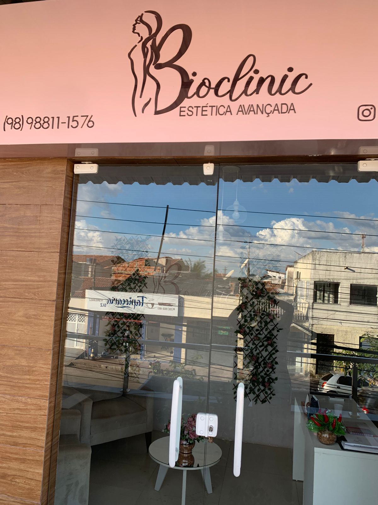

01
Limpeza de Pele Profunda
Higienização, esfoliação e extração para uma pele renovada, livre de impurezas e com viço de volta.
Tratamentos faciais e corporais no Cohatrac, em São Luís, conduzidos por responsável técnica registrada (CRBM). Cuidado de verdade com a sua pele — e o seu bem-estar.

A Clínica
A Bioclinic Estética Avançada nasceu para entregar, em São Luís, um atendimento que une técnica e acolhimento. Aqui a estética é tratada com seriedade clínica: avaliação individual, protocolos seguros e acompanhamento de quem entende de pele de verdade.
À frente dos procedimentos está a Dra. Fabiana Tavares, biomédica esteta com registro profissional (CRBM 11622). É essa combinação de conhecimento e cuidado que fez a clínica chegar à nota máxima no Google — e fideliza quem passa por aqui.
Procedimentos
Higienização, esfoliação e extração para uma pele renovada, livre de impurezas e com viço de volta.

Estímulo de colágeno e renovação celular para suavizar manchas, marcas de acne e linhas de expressão.

Preenchimento e procedimentos avançados com resultado natural e harmonioso — realçar sem exagerar.

Massagem modeladora e protocolos corporais para contorno, firmeza e bem-estar de corpo inteiro.
Protocolos personalizados de cuidado contínuo, num ambiente pensado para você relaxar e se cuidar.
Cada pele é única. Conte o que você quer melhorar e a Dra. Fabiana indica o protocolo certo pra você. Fale agora pelo WhatsApp.
Quem cuida aqui, volta
A confiança das clientes da Bioclinic não está em promessa: está na avaliação máxima no Google e em quem indica a clínica para amigas e família em São Luís.
“Atendimento impecável e resultado que eu via no espelho. Saí da limpeza de pele com a autoestima lá em cima.”
Cliente · São Luís, MA“A Dra. Fabiana explica tudo, é cuidadosa e profissional. Confio totalmente na minha pele com ela.”
Cliente · Cohatrac“Ambiente acolhedor, hora marcada respeitada e procedimento seguro. Virei cliente fiel da Bioclinic.”
Cliente · São Luís, MAGaleria

Onde estamos
Vamos cuidar de você
Conte o que você quer melhorar na sua pele ou no seu corpo. A Bioclinic responde no WhatsApp e ajuda você a marcar o melhor horário.
Falar agora no WhatsApp